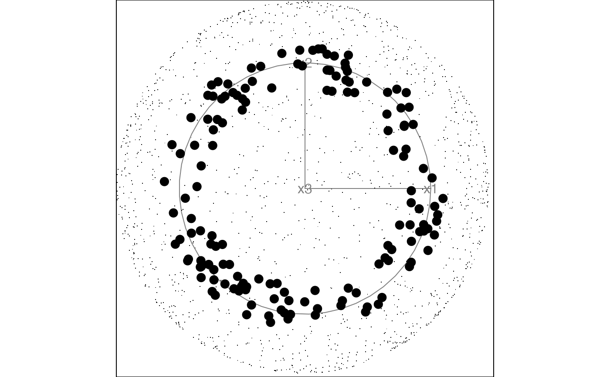

The guided section tour is a variation of the guided tour that is using a section pursuit index for the selection of target planes.
guided_section_tour( index_f, d = 2, alpha = 0.5, cooling = 0.99, max.tries = 25, max.i = Inf, v_rel = NULL, anchor = NULL, search_f = search_geodesic, ... )
| index_f | the section purusit index function to optimise. The function needs to take three arguments, the projected data, the vector of distances from the current projection plane, and the slice thickness h. |
|---|---|
| d | target dimensionality |
| alpha | the initial size of the search window, in radians |
| cooling | the amount the size of the search window should be adjusted by after each step |
| max.tries | the maximum number of unsuccessful attempts to find a better projection before giving up |
| max.i | the maximum index value, stop search if a larger value is found |
| v_rel | relative volume of the slice. If not set, suggested value is caluclated and printed to the screen. |
| anchor | A vector specifying the reference point to anchor the slice. If NULL (default) the slice will be anchored at the data center. |
| search_f | the search strategy to use |
| ... | arguments sent to the search_f |
Usually, you will not call this function directly, but will pass it to
a method that works with tour paths like animate_slice,
save_history or render.
slice_index for an example of an index functions.
search_geodesic, search_better,
search_better_random for different search strategies
# Generate samples on a 3d hollow sphere using the geozoo package set.seed(12345) sphere3 <- geozoo::sphere.hollow(3)$points # Columns need to be named before launching the tour colnames(sphere3) <- c("x1", "x2", "x3") # Off-center anchoring anchor3 <- rep(0.75, 3) # Index setup r_breaks <- linear_breaks(5, 0, 1) a_breaks <- angular_breaks(10) eps <- estimate_eps(nrow(sphere3), ncol(sphere3), 0.1/1, 5*10, 10, r_breaks) idx <- slice_index(r_breaks, a_breaks, eps, bintype="polar", power=1, reweight=TRUE, p=3)#> Reweighting assuming p=3Rescaling raw index by a factor 1.11111111111111# Running the guided section tour select sections showing a big hole in the center animate_slice(sphere3, guided_section_tour(idx, v_rel=0.1, anchor = anchor3, max.tries=5), v_rel=0.1, anchor = anchor3)#>#> Value 0.899 113.9 % better - NEW BASIS#>#>